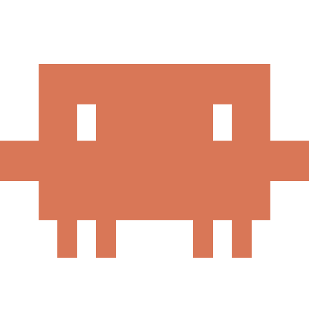
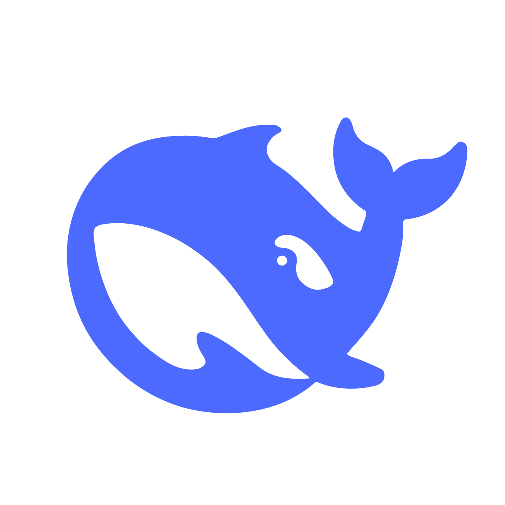
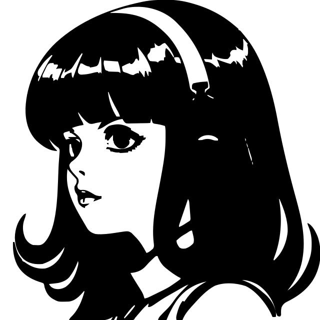

از تاکسونومی حمله و سوءاستفادهی عاملها تا معماریهای دفاع عاملمحور؛ مروری بر دو پژوهش نظاممند ۲۰۲۵ و ۲۰۲۶ و آنچه هنوز حل نشده است.
شش بخش؛ دو لنز حمله و دفاع، و یک لایهی مشترک معماری
یک محصول اما با سه محیط جداگانه؛ برای مثال سایت روی آمازون، مشتریها روی مایکروسافت، دستیار خرید روی گوگل.
از ۲٬۰۳۸ نتیجهی جستوجو به ۵۲ مقاله رسیدیم؛ هیچکدام سه ابر واقعی را کنار هم نسنجیده بودند.
چارچوبی که همزمان چند ابر را بسنجد وجود ندارد.
مدلها تصمیم میگیرند، اما دلیلشان را نمیگویند.
همهی ابرها سیاست یکسان ندارند.
هیچیک از ۲۲ مطالعه روی چندابری واقعی نبودهاند.
هر حمله نوع مشخص سوءاستفاده و منبع متفاوتی دارد.
روی هر نقطه بزنید تا نوع سوءاستفاده و زیرروشهایش را ببینید.
زیرروشها همان راههای عملی حملهاند؛ هر دسته منبع خودش را دارد.
مهاجم پنج قدم را میرود: اول نقشه میکشد، بعد کارت جاگذاشته را برمیدارد، درهای بیشتری باز میکند، سراغ ساختمان بغلی میرود و آخر وسایل را میبرد. هوش مصنوعی همین مسیر را سریعتر و ارزانتر میکند.
کافی است مهاجم فقط یک ابر را هک کند، آنگاه حرکت افقی به راحتی آبخوردن است!
نقشی که خودِ برنامهها با آن کار میکنند، نه آدمها؛ و معمولاً دسترسی زیادی دارد.
اجازهی گرفتنِ موقتِ نقشِ یک ابر دیگر؛ مثل کارت مهمانی که در ساختمان بغلی هم کار میکند.
فضای ذخیرهی فایلها در ابر؛ اگر کلیدش لو برود، همهی دادهها خواندنی است.
مدل از لاگها یاد میگیرد؛ یک ابر میتواند لاگ قلابی بفرستد تا حمله «عادی» دیده شود.
عامل چک میکند «اجازه دارم یا نه»؛ چک نمیکند «حرف طرف مقابل درست است یا نه».
سه شرط کافی: اختیار زیاد، ورودی غیرقابلاعتماد، نبود تأیید انسانی.
چرا دیده نمیشود: چون خیلیها میخواهند فقط کار انجام شود و به امنیت اهمیت نمیدهند.
هوش مصنوعی فقط بخشی از این لایه است، نه مسئول کل نظارت.
مدلهایی که «حالت عادی» را خودشان یاد میگیرند، از مدلهایی که فقط نمونهی هک سیستم دیدهاند بهتر عمل میکنند.
دقت تشخیص بدون برچسب، در برابر سیستم قاعدهمحور
با GNN (GCN/GAT) در مقیاس سازمانی
دفاع یک محصول نیست؛ یک چرخه است: نگهبانی که از اشتباهاتش میآموزد.
چشم (لاگ سه ابر)، مغز (مدل)، دست (ابزار) — و یک دروازه که هر دستور را قبل از اجرا چک میکند.



همین سه نقش، در عاملهای واقعی امروز وجود دارد — تفاوت در میزان اختیاری است که به آنها میدهیم.
همان شش حملهی قبلی، به راحتی قابل پیشگیری هستند.
هر ابر داده و مدل خودش را نگه میدارد؛ فقط آییننامه و تصمیم مشترک میشود.
هیچ درخواستی بهخاطر «داخل شبکه بودن» پذیرفته نمیشود و مورد اعتماد نیست. هر بار با معیارها سنجیده میشود.
وقتی هر درخواست جدا سنجیده شود، دزدیدن یک رمز دیگر کلید همهی درها نیست.
توکن کوتاهعمر است و هر درخواست دوباره سنجیده میشود.
هر ماشین فقط به همان چیزی میرسد که اجازه دارد، نه سرویس بغلی.
اجازه برای همان کار و همان ساعت؛ با پایان کار تمام میشود.
میدانی چه کسی، کِی، به چه چیزی دست زد؛ حمله بیصدا نمیماند.
بدترین حالت، از دست رفتن یک منبع است، نه هر سه ابر.
قاعده یکجا نوشته و همهجا اجرا میشود؛ کپی دستی لازم نیست.
همهی روشها یک بدهبستان هستند و جواب مشخصی وجود ندارد.
دزدی رمز، جعل هویت و ورود با حساب قدیمی
ورود کندتر و نیاز به پشتیبانی کاربر
حرکت جانبی و سوءاستفادهی عامل از اختیار زیاد
کار روزمره سختتر؛ باید هر اجازه را توجیه کرد
پخش شدن حمله از یک سرویس به سرویس دیگر
نگهداری فهرست جریانهای مجاز و تست مداوم
تنظیم دستی، اشتباه انسانی و تفاوت بین سه ابر
نیاز به تست، نسخهبندی و بازبینی تغییرها
مدل آلوده، پکیج جعلی و ساخت دستکاریشده
ساخت کندتر و رد شدن قطعههای قدیمی
حملهی بیصدا و پاککردن رد پا
حجم داده، هزینهی نگهداری و کار تحلیلگر
پنج نکتهی عملی و واقعی.
وقتی مرز روشنی نیست، هر تصمیم باید بر هویت و زمینه بنا شود — همان حرف اعتماد صفر.
هوش مصنوعی فقط سرعت میبخشد؛ این انسان است که مسئولیت را برعهده میگیرد.
با سیاستهای هر سازمان یا هر ابر فرق میکند؛ پس انتزاعی است. تا وقتی هک نشود، امن است!
فایروال و IdP و هوش مصنوعی خیلی هوشمند هستند؛ اما خلاقیت انسان است که به امنیت معنا میبخشد.
ابر محرمانه است و تحقیق مشترک بین ابرها تا حالا انجام نشده، چون سازمانها امنیت خود را برای یک تحقیق ساده به خطر نمیاندازند؛ تعمیم یک ابر به چند ابر فقط یک سرنخ است.
آمادهی پرسش و پاسخ هستیم — دربارهی چندابری، سناریوهای حمله، یا مرز اختیار عاملها هر سؤالی دارید بپرسید.